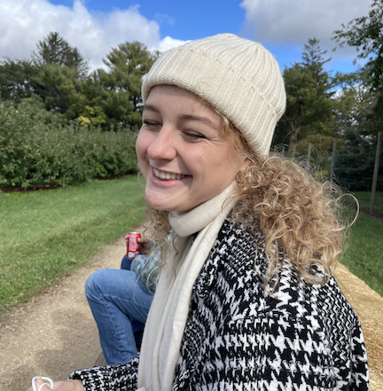

Hi, I'm Paige (she/her) and welcome to my website!

I created this website to be a publicly accessible repository of my research and personal projects. I'm excited to have this platform to share my work and life with you.
Here's a bit about me, academically:
- I am a first-year PhD student program in Biostatistics at the University of Washington.
- I'm currently working with Dr. Jon Wakefield and the Space Time Analaysis Bayes (STAB) lab to analyze spatial correlation childhood mortality indicators.
- I received my Bachelor of Arts in Applied Mathematics and Statistics from Macalester College (Twin Cities, MN) in 2024. My minors were Anthropology and Community & Global Health.
- I was a research fellow in the Durham-Chapel Hill area for a year, where my research used longitudinal modeling to look at associations between puberty and cancer.
- My CV has more information, if you're curious.
A bit more about me, outside of math:
- I am from Pittsburgh, PA but moved with my family to Seattle when I was 12... I love being closer to my parents after 5 years
- I love reading, running, and resting: my big 3!
- My current read is *Will of the Many* by James Islington
- I started running about three years ago, after playing soccer for most of my life. I ran my first half marathon with my Dad this past fall in Seattle!
- And resting is resting, self-explanatory. I love laying in the sun or in my bed with my orange cat, Goose.
- I also love to do yoga, try new food + recipes, and drink good coffee.
Links and Contact
If you're interested in my research or have any questions, feel free to contact me.
I also try to be active on
LinkedIn
and
Goodreads,
so check those out!